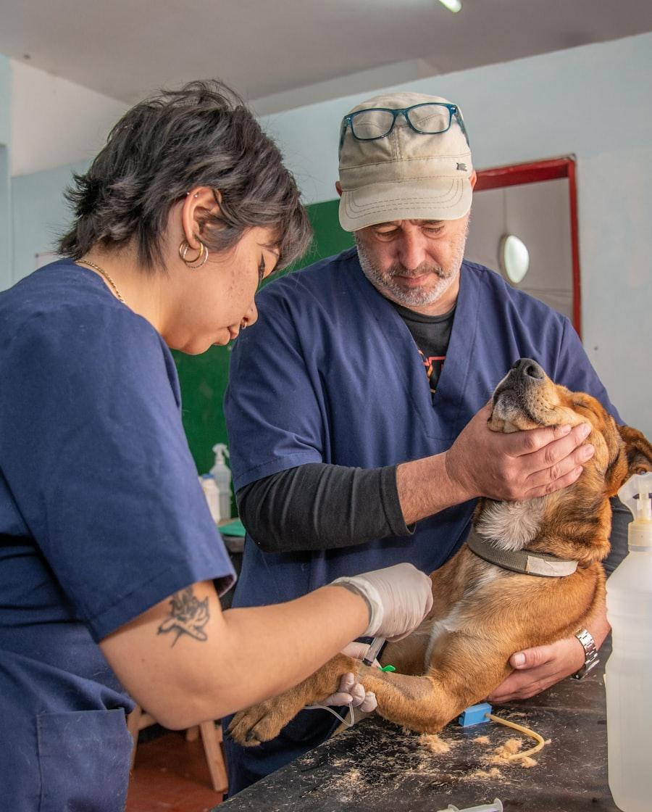

Llama antes de salir de casa
Es el minuto mejor invertido. Con lo que nos cuentes preparamos la sala, la vía, el oxígeno y la medicación que previsiblemente vamos a necesitar. También te decimos cómo moverlo para no empeorar una lesión.
Guardia presencial de verdad: un veterinario y un auxiliar dentro de la clínica a cualquier hora, no un teléfono que avisa a alguien que está en su casa.

Cómo lo hacemos
Es el minuto mejor invertido. Con lo que nos cuentes preparamos la sala, la vía, el oxígeno y la medicación que previsiblemente vamos a necesitar. También te decimos cómo moverlo para no empeorar una lesión.
Al entrar valoramos primero lo que mata: vía aérea, respiración, circulación y nivel de consciencia. Un animal inestable pasa por delante de cualquier consulta programada, y te lo explicamos si te toca esperar.
Primero se corrige lo que compromete la vida —oxígeno, fluidos, analgesia, control de hemorragias— y solo después se buscan pruebas. Diagnosticar a un paciente que se está descompensando es perder tiempo.
En cuanto está estable te explicamos qué hemos encontrado, qué proponemos y cuánto va a costar. Si hay que ingresar, te damos un presupuesto antes de seguir, salvo que la demora suponga un riesgo.
Si dudas, llama: valorar por teléfono es gratis y preferimos mil consultas de más a una de menos. Dicho eso, estos signos son motivo de salir hacia la clínica sin esperar:
La atención de urgencia tiene un precio superior al de una consulta programada, porque implica personal disponible en horario nocturno y festivo. Te lo decimos antes de empezar, no al final.
Si el presupuesto es un problema, dilo cuanto antes. Hay decisiones clínicas que se pueden escalonar y opciones intermedias que podemos plantear, pero solo si lo hablamos a tiempo.
Preguntas
Sí. Un veterinario y un auxiliar, dentro del centro. No es un teléfono de aviso que localiza a alguien en su domicilio y tarda media hora en llegar.
No. Ven directamente. Lo único que te pedimos es que llames por el camino para que podamos preparar la sala y ganar minutos.
Sí, sin ningún problema. Si tu animal se trata habitualmente en otra clínica, le pasamos el informe completo de lo que hemos hecho para que su veterinario siga el caso.
Otros servicios
No esperes a mañana para ver si mejora. Llama y lo valoramos por teléfono contigo; si hay que venir, te lo decimos.